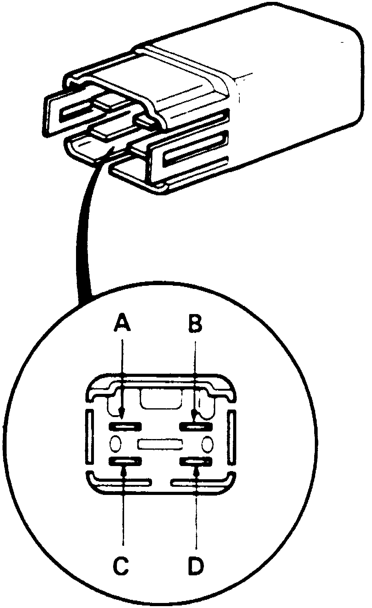
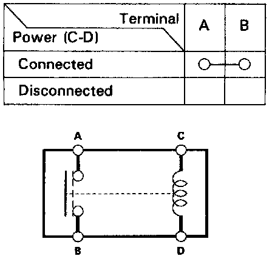

Compressor Clutch Relay: Testing and Inspection
Fig. 23 Relay Terminal Identification:


There should be continuity between the A and B terminals when power and ground are connected to the C and D terminals.
There should be no continuity when power is disconnected.